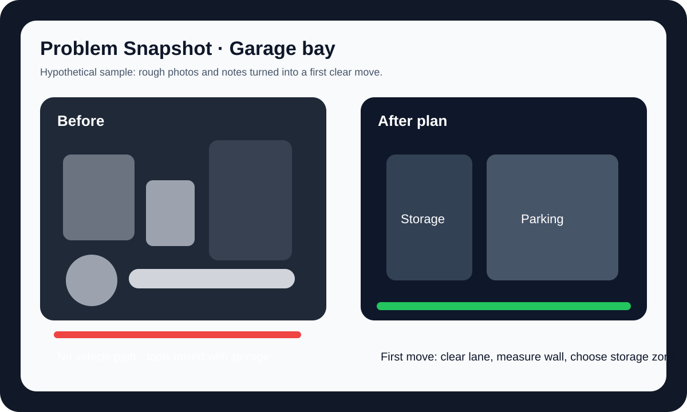
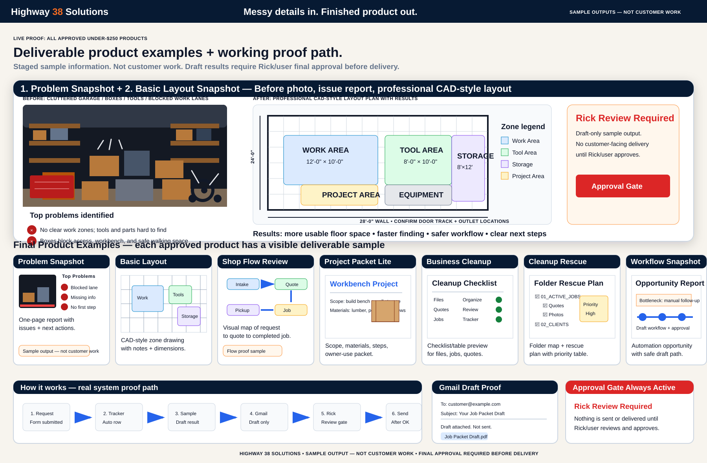
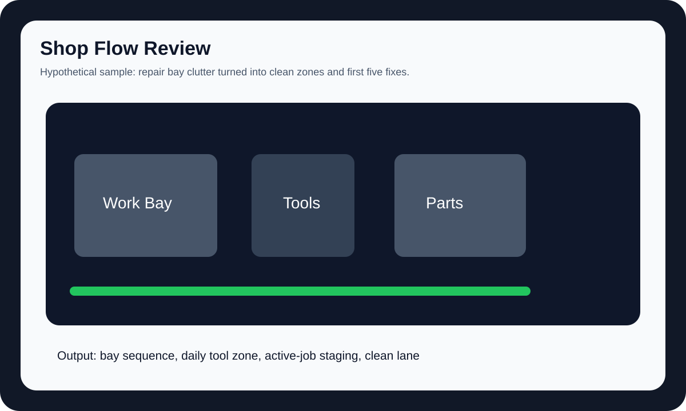
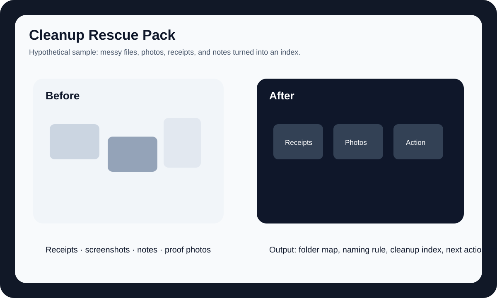
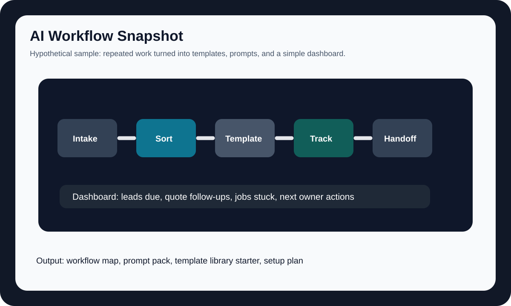

Sample output — not customer workHypothetical exampleStaged demo using sample information

Problem Snapshot
Turns messy photos and notes into first move, missing-info list, and risk summary.
View resultStaged screenshots show what the system can prepare. Functional proof shows the workflow path. Final customer-facing delivery remains approval-gated.
These are staged demos using sample information, not customer work. They show the locked product path and the internal draft-result workflow.


Turns messy photos and notes into first move, missing-info list, and risk summary.
View result
Turns rough measurements into zones, layout direction, and measurement checklist.
View result
Shows bay flow, tool placement, parts staging, and first fixes.
View result
Shows project phases, material groups, build order, and owner checklist.
View result
Turns scattered leads into a quote path, tracker fields, and follow-up wording.
View result
Shows folder map, cleanup index, naming rules, and grouped next actions.
View result
Maps repeated admin work into a safe draft workflow and first test plan.
View resultAutomation prepares internal drafts only. Quotes, payments, customer-facing replies, and delivery stay gated until Rick/user final approval.